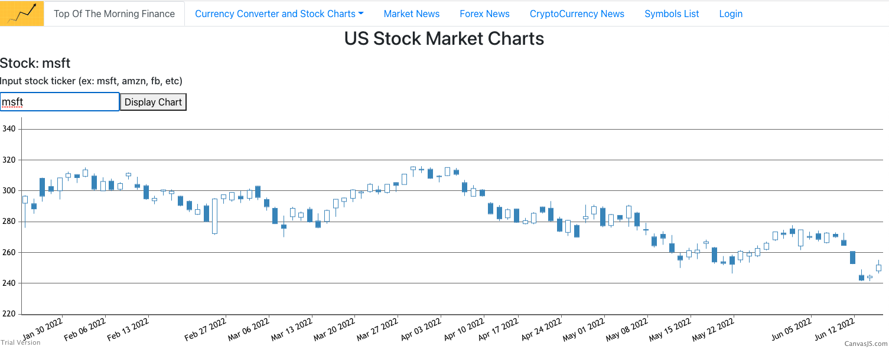

1. Ultimate Ping-Pong!
This was the first project I had written in Javascript. The ball travels faster as you play against the computer AI.
Play Here!2. Top Of The Morning Finance App
In this project, I used several different APIs to give users a well-rounded financial news experience. Users were able to look at stock charts based on ticker input and get market news from a simple search of a ticker.
3. SNKRS APP
This fullstack react app allowed users to search through a collection of sneakers, see a description of the sneakers, and gave them the option of adding a sneaker to the database. Made with Bootstrap.
4. Fake-Redux-Store
Using a free API, I built a store using redux-toolkit for state management. Allows users to browse, add, and remove individual or bulk items to/from cart.